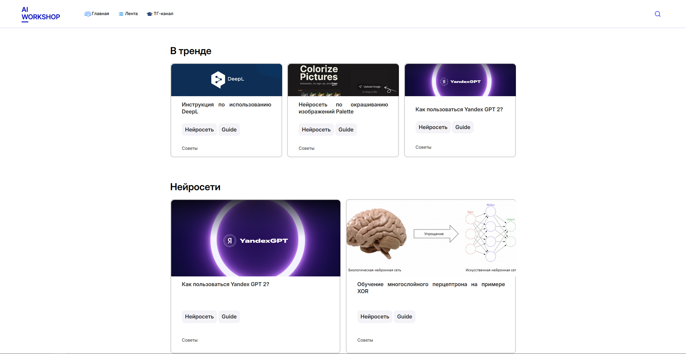

Добро пожаловать!
Этот сайт посвящён проекту AI-Workshop. Здесь вы найдёте информацию о целях, участниках, ходе проекта и полезные ресурсы по нейросетям и ИИ.
Доступные функции сайта:
— Подробные гайды по нейросетям (ссылки на инструменты и инструкции).
— Посты с примерами использования ИИ в работе.